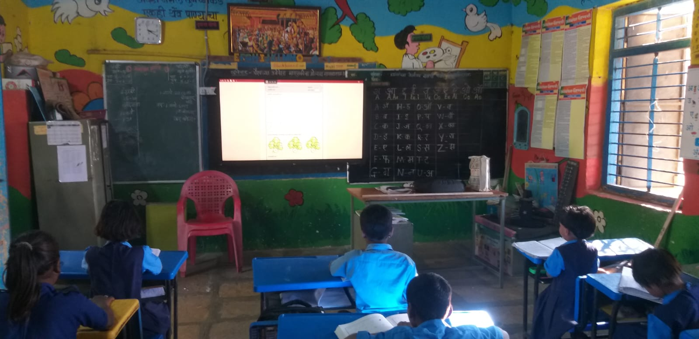
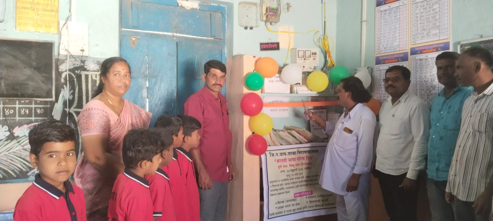
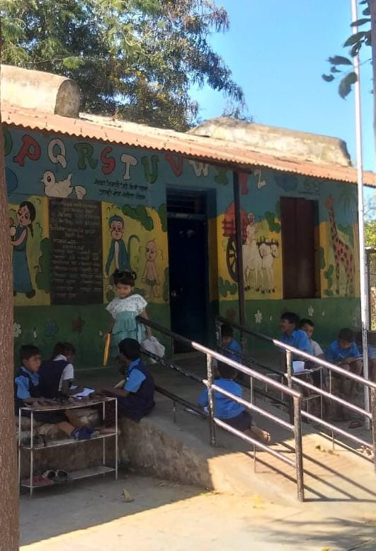

Available
Smart Board
स्मार्ट बोर्ड
Interactive digital board transforming traditional classroom lessons into visual, multimedia experiences that capture young imaginations.
Campus Facilities & Amenities
Explore the facilities, digital learning tools, green gardens, and safe amenities that make Z.P.P.S. Bhingankhalsa a joyful place to grow.
Smart & Connected
Smart board, computers & audio-visual
Flower & Kitchen Garden
Nature and environmental learning
Wholesome Meals
Fresh mid-day meal & handwashing setup
Accessible Ramp
Safe barrier-free entrance for all
स्मार्ट बोर्ड
Interactive digital board transforming traditional classroom lessons into visual, multimedia experiences that capture young imaginations.

संगणक / डिजिटल साधने
Computer access for students to develop early technological confidence, guided by our teacher & tech mentor Mr. Bhujbal.

वर्गातील फळा
Clear, spacious writing boards in every classroom for interactive teacher demonstrations, student problem-solving, and daily lessons.

ग्रंथालय
A treasure trove of storybooks, pictorial encyclopaedias, folk tales, and curriculum reference books in Marathi and English to foster lifelong reading habits.

वाचन कोपरा / पुस्तके
Dedicated friendly reading nooks inside classrooms where children can freely pick up illustrated books during free study time.

कला / खेळ साहित्य
Crayons, drawing sheets, craft supplies, and creative kits that let children express their imagination through color, drawing, and craftwork.

पिण्याचे पाणी
Safe, clean, and filtered drinking water points readily accessible to all children throughout the school day.

हात धुण्याची जागा व साबण
Specially designed child-friendly handwashing stations equipped with soap to promote daily hygiene habits before meals and after playtime.

जेवणाची सोय (Mid-day Meal)
A hygienic, covered dining space where students sit together to enjoy hot, nutritious mid-day meals prepared with care.
स्वच्छतागृह
Maintained, separate sanitation and washroom facilities ensuring privacy, hygiene, and dignity for every student.

प्रथमोपचार पेटी
Fully equipped first aid box on campus to attend to minor scrapes, bumps, and health needs promptly and safely.

फुल बाग व भाजीपाल्याची बाग
Cherished by our students as their favorite peaceful spot on campus! Children observe flowering plants, organic vegetables, and learn botany firsthand.

खेळाचे मैदान व खेळ साहित्य
Open outdoor playground where students play traditional sports, engage in daily physical training (PT), and build sportsmanship and teamwork.

रॅम्प / सोपा प्रवेश
A gentle slope entrance ramp ensuring the school building is accessible and welcoming to every student without physical barriers.

सूचना फलक
Central communication board displaying important school notices, student artwork, academic timetables, and competition announcements.
From the Student Worksheets
During their campus treasure hunt, students were asked what they would love to see added to their beloved school in the future. Their honest, inspiring wishes guide our continuous development:
✦ EXPERIENCE OUR CAMPUS ✦
Read about our history, teachers, and school mission on the About page.